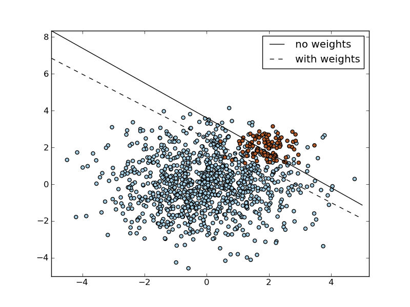

SVM: Separating hyperplane with weighted classes¶
Fit linear SVMs with and without class weighting. Allows to handle problems with unbalanced classes.

Python source code: plot_weighted_classes.py
print __doc__
import numpy as np
import pylab as pl
from scikits.learn import svm
# we create 40 separable points
np.random.seed(0)
n_samples_1 = 1000
n_samples_2 = 100
X = np.r_[1.5*np.random.randn(n_samples_1, 2),
0.5*np.random.randn(n_samples_2, 2) + [2, 2]]
y = [0]*(n_samples_1) + [1]*(n_samples_2)
# fit the model and get the separating hyperplane
clf = svm.SVC(kernel='linear')
clf.fit(X, y)
w = clf.coef_[0]
a = -w[0] / w[1]
xx = np.linspace(-5, 5)
yy = a * xx - clf.intercept_[0] / w[1]
# get the separating hyperplane using weighted classes
wclf = svm.SVC(kernel='linear')
wclf.fit(X, y, class_weight={1: 10})
ww = wclf.coef_[0]
wa = -ww[0] / ww[1]
wyy = wa * xx - wclf.intercept_[0] / ww[1]
# plot separating hyperplanes and samples
pl.set_cmap(pl.cm.Paired)
h0 = pl.plot(xx, yy, 'k-')
h1 = pl.plot(xx, wyy, 'k--')
pl.scatter(X[:,0], X[:,1], c=y)
pl.legend((h0, h1), ('no weights', 'with weights'))
pl.axis('tight')
pl.show()